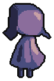
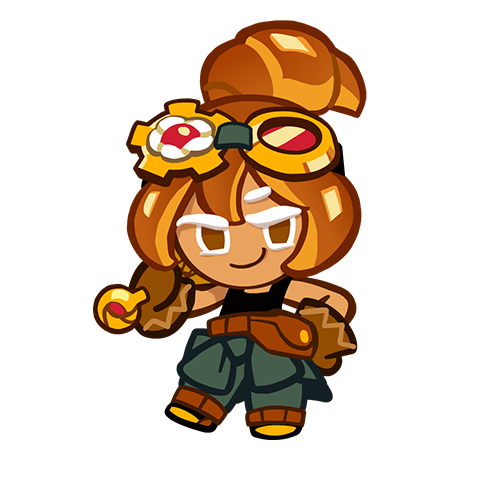
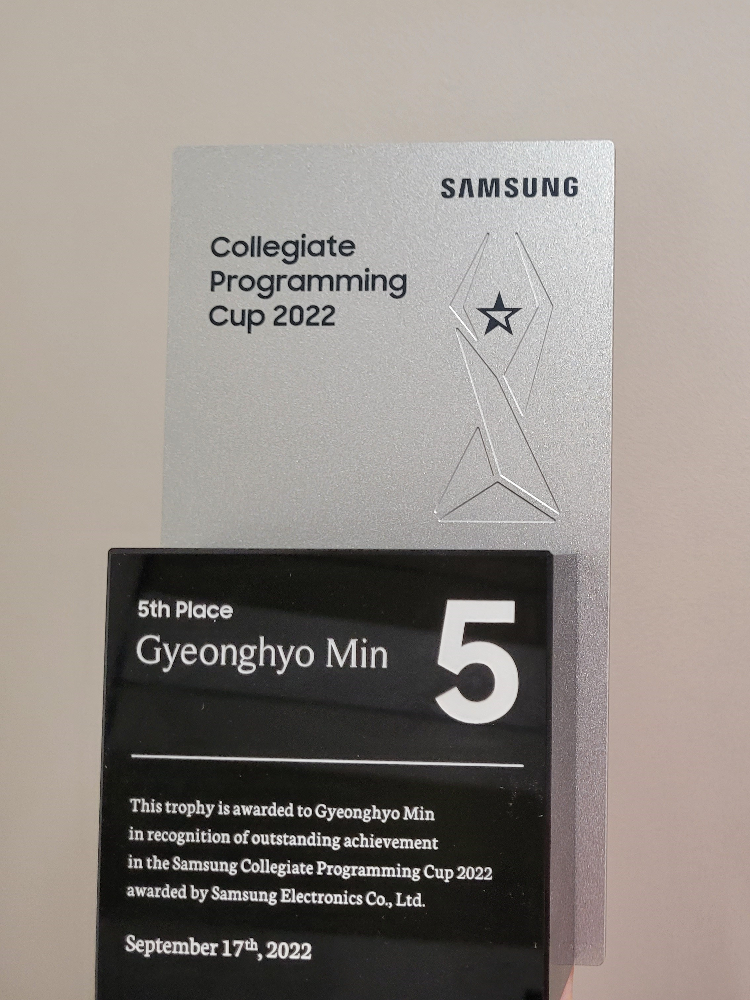

About Myself

안녕하세요, 민경효입니다.
현재 인디게임 'Reverie'를 1인 개발 중입니다.
cakelemon13@gmail.com
경력 사항
2017 ~ :
서울대학교 컴퓨터공학부 17학번 입학
2019/5/08 ~ 2021/6/30:
데브시스터즈 '쿠키런: 오븐브레이크' 팀 클라이언트 개발자로 근무
2021/6 ~ :
서울대학교 복학
경력 세부 사항

데브시스터즈(2019 - 2021, 산업기능요원)
쿠키런: 오븐브레이크 클라이언트 개발자
C++, cocos2d-x 엔진을 활용하여 인게임 및 아웃게임 컨텐츠를 개발.
1. 동굴 탐사대 이벤트용 보스 및 인게임 시스템 개발.
2. 올해의 쿠키 월드컵, 도장깨기 등 이벤트 모드 개발.
3. 메인 메뉴 및 튜토리얼 부분에 대한 리뉴얼 작업을 담당.
4. 20여종 이상의 다양한 쿠키/펫/보물의 기능 구현.
competetive programming

삼성 대학생 프로그래밍 경진대회(SCPC) 5등상 수상.
서울대학교 알고리즘 대회인 SNUPC 2022에 출제진으로 참여.